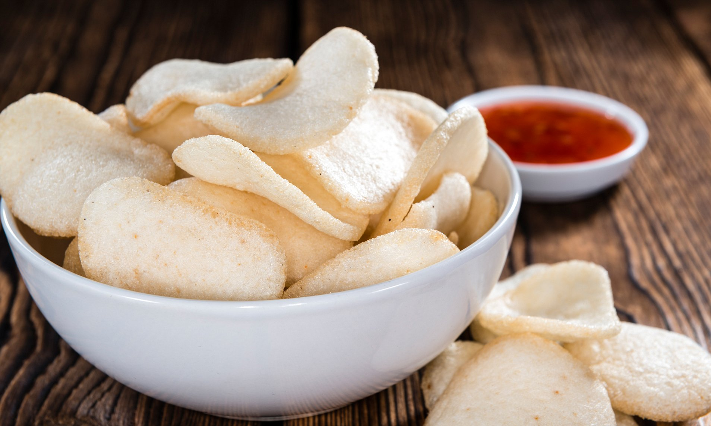
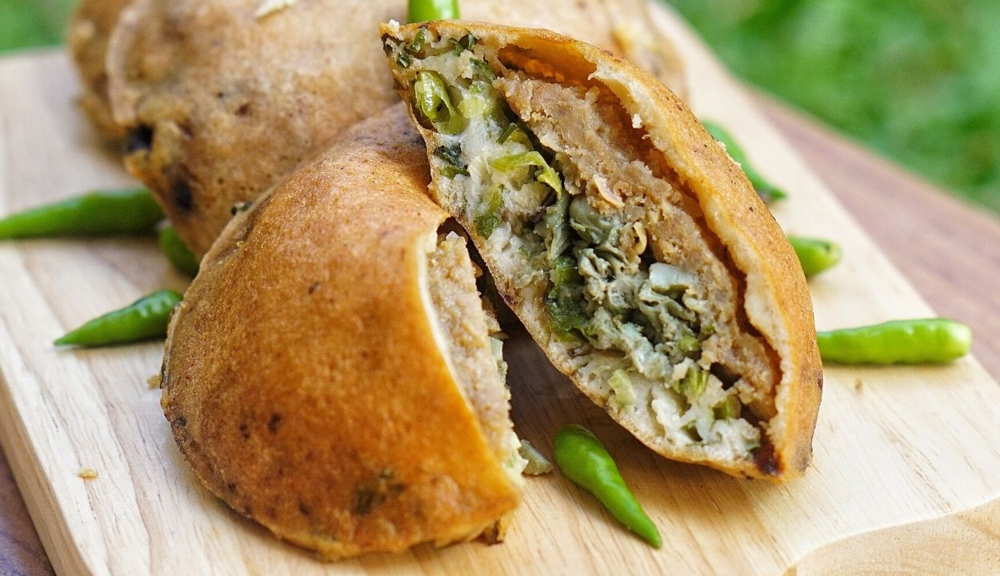

Local Food

Krupuk Udang
a form of deep fried snack made from tapioca flour and pounded prawns
Petis Udang
a paste made from shrimp and caramelized palm sugar which is heated until the liquid become thick sauce.
Kupang Lontong
a dish which consists of steamed rice in a banana leaf wrapper served with small white mussel, a kind of shells with its size only as big as rice seeds.
Ote-Ote Porong
a fried meal consisting of vegetable and batter, can be refer as vegetable fritter. Ote-ote porong is made from fresh oyster slice wrapped in ear mushrooms and minced meat.
